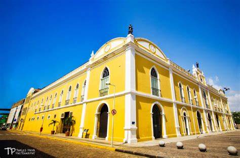
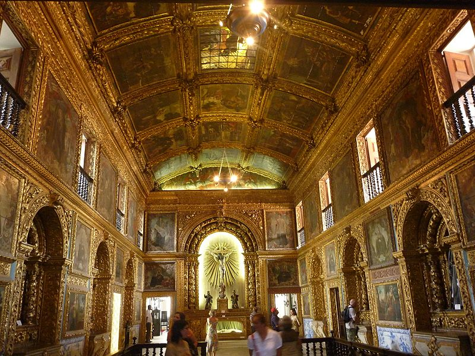

Shopping Passo Alfândega Recife
O Shopping Paço Alfândega Recife, além de ser um dos maiores marcos históricos de Recife Antigo, também é um comércio. Ele está localizado próximo ao lado da Livraria Cultura, e também tem um caixa 24h dentro de suas instalações. Possui uma praça de alimentação razoavelmente grande, além de cafés e diversas lanchonetes. É um shopping bonito, com uma bela arquitetura, renovada, até pelas revitalizações feitas. Uma das curiosidades é que o shopping foi construído dentro de um prédio antigo, contudo serviu diversas vezes de alfândega. Fora que, possui três andares de altura com diversas lojas que vendem todos os tipos de produtos diferenciados. Tem barracas de artesanato que buscam o comércio de obras e bijuterias locais, sem falar nos diversos souvenires. Não deixe de visitar o Paço Alfândega, pois é um dos melhores do Recife Antigo.
Capela dos Noviços da Ordem Terceira de São Francisco de Assis
Também é uma boa parada. Simplesmente conhecida como “Capela Dourada”, ela ganhou este apelido pela exuberante quantidade de ouro que possui em suas instalações. Paredes, madeiras forradas e até mesmo esculturas são todas banhadas ou feitas de ouro. Ela é uma das igrejas mais visitadas de Recife, e é permitido tirar fotografias do local. Também existe um policiamento forte na região, até para evitar roubos e ações negativas de ladrões.
